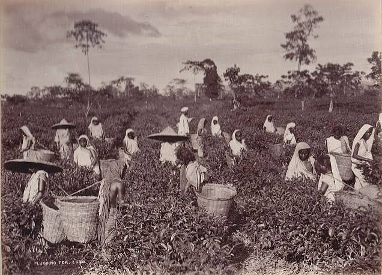

Origins of Estate Development
During the nineteenth century, British planters recognised the cool climate, heavy rainfall and hilly terrain of the Anamalai region as suitable for commercial plantations. Forest land was gradually organised into tea and coffee estates.

Tea Plantations
Tea became the dominant crop. Estates developed nurseries, worker housing, factories and processing systems. Tea rows were laid across slopes to support drainage and make harvesting practical.
Coffee Plantations
Alongside tea, coffee was cultivated in suitable areas. Shade trees and forest cover helped create a balanced plantation environment and supported the wider agricultural economy.
Economic Impact
Estate development created jobs in cultivation, transport, factory processing and administration. Plantations remain central to Valparai's identity and support local livelihoods and tourism.